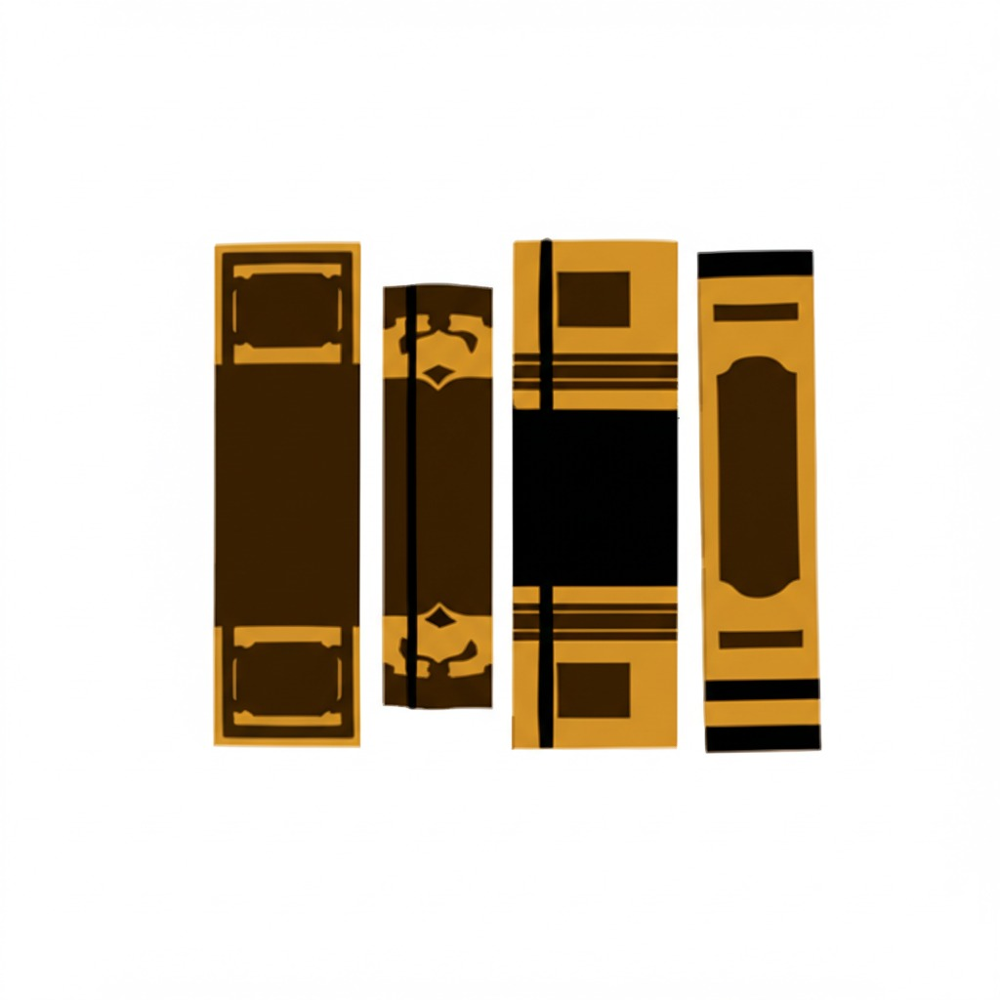
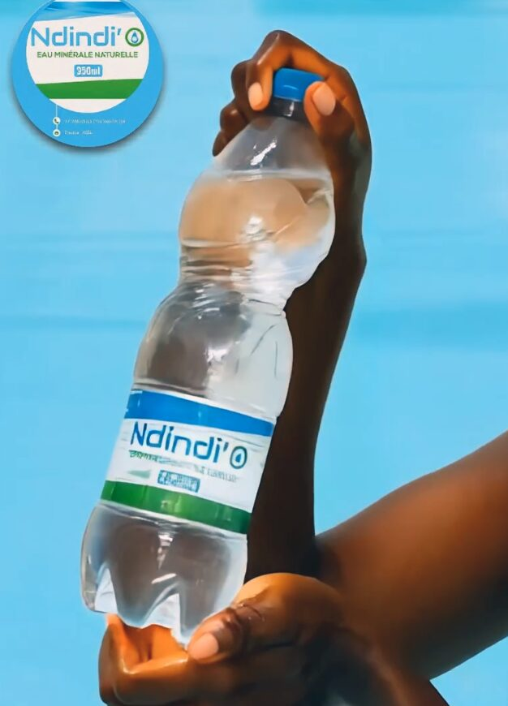

Une réputation antérieure à la marque
La source de Touba Affè est célèbre pour son eau pure et son goût inégalé. Nous n'avons pas créé cette réputation : nous avons choisi d'en être dignes.

Accueil/Notre eau
Touba AffèNdindi'O n'est pas une eau que l'on fabrique. C'est une eau que l'on reçoit, que l'on protège, et que l'on transmet sans jamais trahir son goût d'origine.

Créée en 2022 et mise en production en 2024, Ndindi'O est née d'une vision claire : offrir une eau de qualité supérieure, à la fois saine et accessible, en réponse à une demande croissante pour des produits naturels et de haut de gamme.
Entre ces deux dates, il y a deux années de préparation : l'étude de la ressource, le choix des équipements, la mise au point des procédures, la construction d'une chaîne d'embouteillage capable de tenir un standard constant. Rien n'a été précipité, parce qu'une eau ne se rattrape pas après coup.
Chaque goutte d'eau de Ndindi'O est soigneusement traitée, embouteillée et conditionnée selon des normes rigoureuses, afin de garantir une qualité irréprochable.
Une eau naît d'un territoire. Celle-ci vient d'un lieu chargé de sens, où la qualité de l'eau fait partie de la mémoire collective bien avant qu'une marque ne s'y installe.
La source de Touba Affè est célèbre pour son eau pure et son goût inégalé. Nous n'avons pas créé cette réputation : nous avons choisi d'en être dignes.
Avant d'être captée, l'eau chemine lentement dans le sous-sol. Ce parcours souterrain lui donne sa limpidité et sa richesse en minéraux essentiels.
Captage, traitement et embouteillage se font sur le même site. Moins de transport intermédiaire, moins de manipulations, plus de maîtrise.
Une eau minérale naturelle se reconnaît à son équilibre. Celle de Ndindi'O est naturellement pourvue en minéraux essentiels, ce qui lui donne une hydratation efficace et un caractère franc en bouche.
Nous avons fait un choix simple : ne pas reconstruire le goût. Le traitement sécurise l'eau, il ne la reformule pas. Ce que vous buvez est le profil naturel de la source, préservé.
La composition minérale officielle et les mentions réglementaires figurent sur l'étiquette de chaque bouteille.

La pureté de la source, combinée à une technologie de traitement de pointe, assure un goût unique, rafraîchissant et inimitable.
L'eau est prélevée dans un périmètre préservé. Le forage est sécurisé et surveillé : aucune eau de surface, aucune contamination extérieure ne peut s'y mêler.
L'eau passe par une chaîne de traitement moderne, dimensionnée pour sécuriser le produit sans dénaturer son profil minéral. Objectif : une eau sûre, dont le goût reste celui de la source.
Bouteilles et bouchons sont contrôlés puis rincés avant remplissage. Un contenant mal préparé suffirait à ruiner une eau parfaite : cette étape ne se néglige jamais.
Le remplissage s'effectue en environnement contrôlé, dans un circuit qui limite au maximum les contacts et les temps d'exposition. Bouchage et capsulage suivent immédiatement.
Des vérifications sont réalisées tout au long de la production : aspect, étanchéité, niveau, marquage. Un lot ne quitte pas le site sans avoir été validé.
Chaque lot est identifié et daté. En cas de question, nous pouvons remonter la chaîne jusqu'à la journée de production concernée.
Une eau ne se corrige pas.
Elle se protège.
C'est la règle qui gouverne chacune de nos décisions techniques. Quand un arbitrage se présente entre le rendement et le respect du produit, nous tranchons toujours du côté du produit.
C'est plus long, c'est plus exigeant, et c'est exactement ce que signifie le mot « premium » quand il est employé sérieusement.

Qualité, approvisionnement, partenariat : notre équipe répond aux professionnels comme aux particuliers.